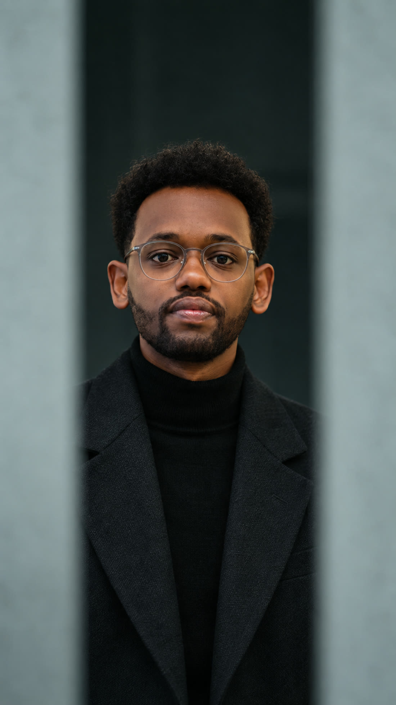
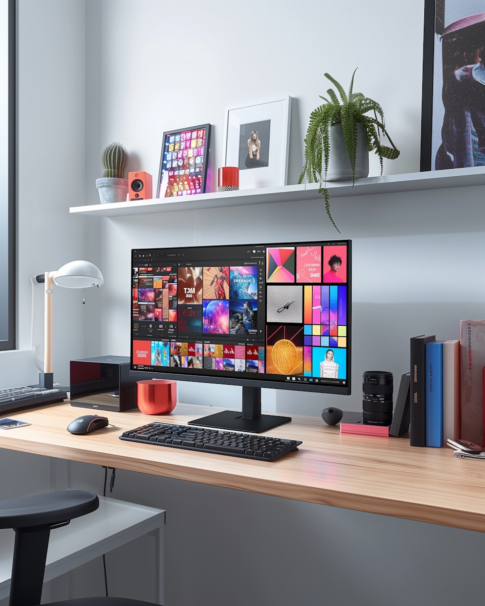
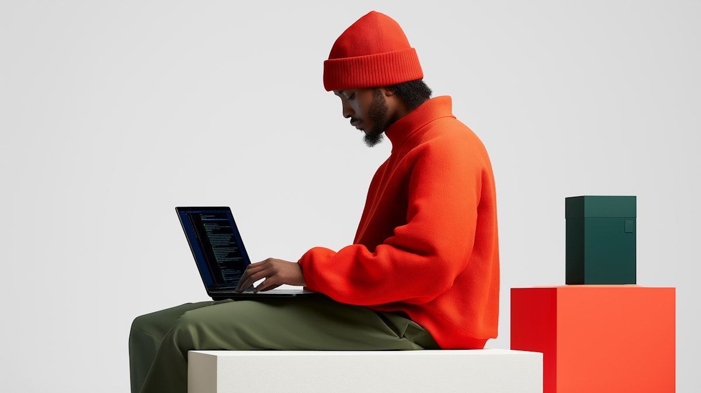
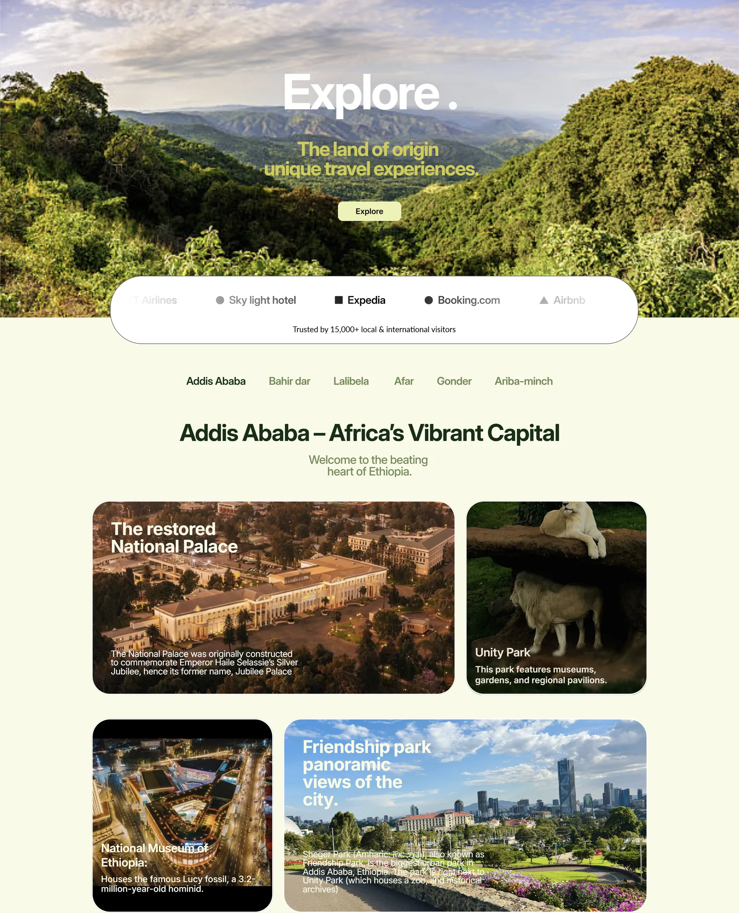
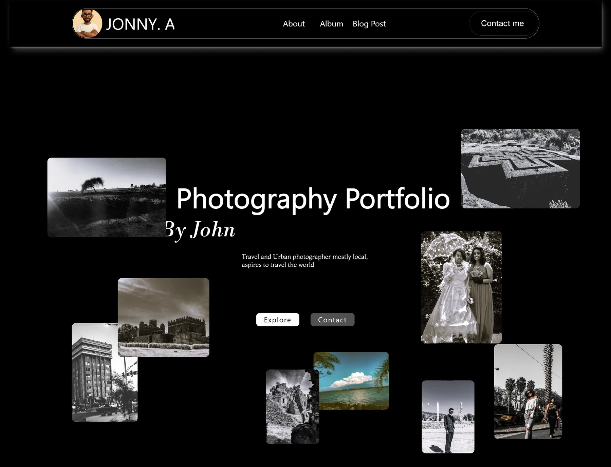
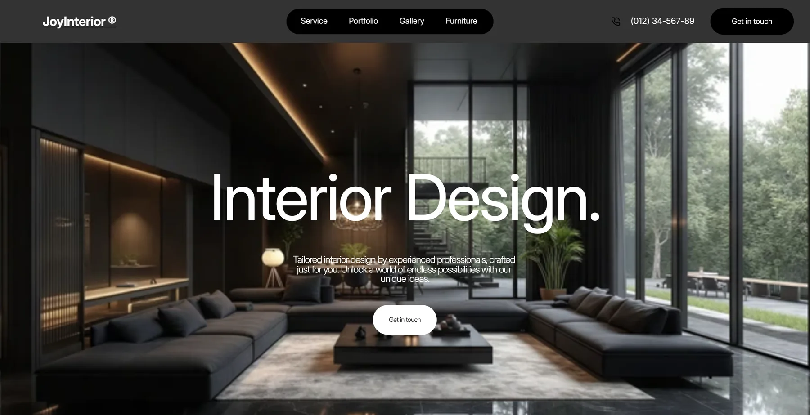
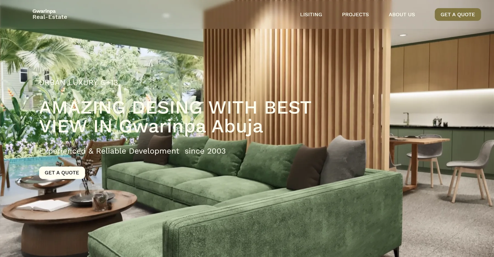
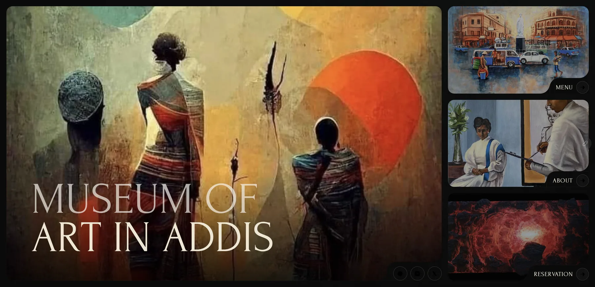
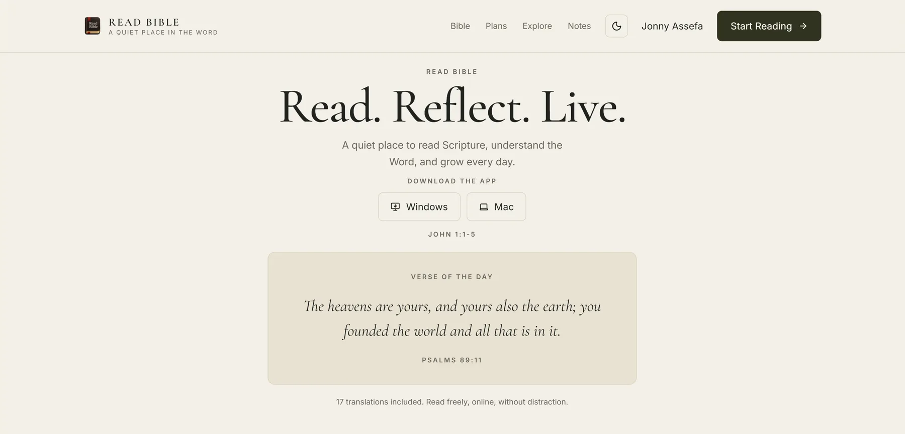

About
An architect’s eye, built for the screen.
I’m a digital designer and Framer developer in Addis Ababa. My background is in architecture — that is where the eye for proportion, photography and detail came from — and the last few years have gone into turning it into websites for travel, photography, interiors, real estate and cultural brands.

My journey
Ideas need both structure and feeling.
I combine an eye for visual detail with a deep understanding of interactive systems. The goal is never just to make something look good. It is to make an idea clear, responsive, and worth returning to.
Graphic Designer · PurposeblackEth
Web Designer · Joye Design Studio
My toolkit
Tools in service of the idea.
Framer
My creative playground for responsive, interactive websites that are fast to shape and easy to evolve.
Figma
My go-to for wireframing, prototyping, and turning an early idea into a clear interface system.
Lightroom
My photo-editing tool for adding colour, depth, and a consistent point of view to visual work.
Illustrator
My tool for graphic design, brand identity, and precision vector design.


The process
Five steps, in order.
Research & strategy
Understand the business, the audience and the goal, then agree a roadmap before anything is drawn.
Concept & direction
Turn the strategy into two or three real directions — not mood boards, but wireframes you can judge.
Feedback & refinement
Review together and shape the work until it answers the brief — in writing, so decisions stay traceable.
Testing & optimisation
Check the real thing on real devices: load, contrast, focus order, touch targets, long copy.
Launch & handover
Ship it, then hand over the system: components, type scale, and what to change next.
In the wild
Work that shipped.
Frames from Six case studies across travel, photography, interiors, real estate, culture and reading — each one designed and built end to end.






Start a project
Have something worth building? Let’s talk.
Send the shape of the idea: the audience, the constraint, the deadline you are working to. You get a reply within one working day, and a written scope before any work starts.
- yohannesassefa17@gmail.com
- +251 92 124 4796
- Addis Ababa, Ethiopia · GMT+3